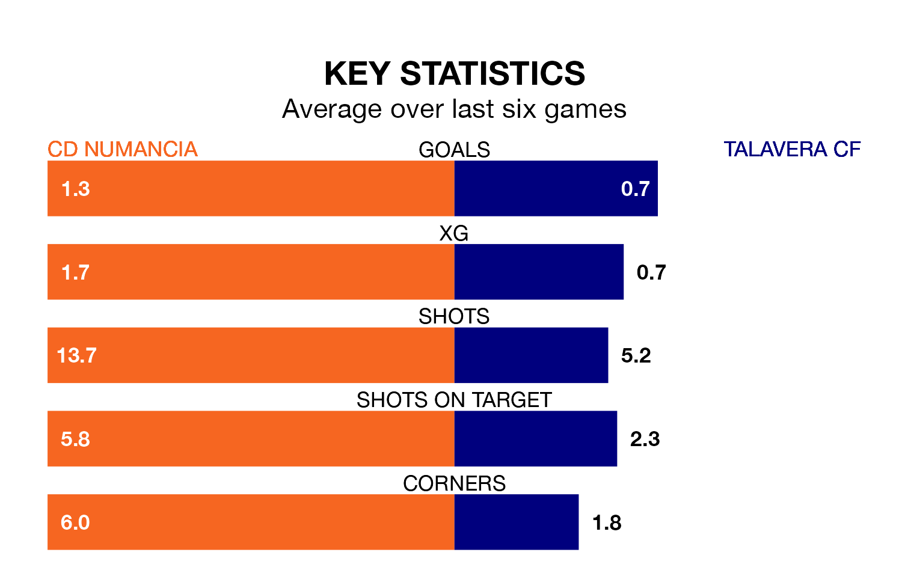

CD Numancia face a challenge to maintain their high-scoring form at home against a tight Talavera CF defence on Sunday.
With 50 goals in 32 games, Numancia are the second-highest scorers in the Segunda División RFEF Group 5 ahead of the 11am kick-off at Nuevo Estadio Los Pajaritos.
They face a Talavera side who have scored 31 in 32 matches, but conceded only 25 goals, putting them joint-third among the league's tightest defences – only SS Reyes and Atlético Paso have conceded fewer goals.
Numancia are top of the table after 32 games, of which they have won 17 and drawn six, earning 57 points.
Talavera are five places behind the home team in sixth, with 12 wins and 10 draws putting them on 46 points.
Numancia are in reasonable form in the Segunda División RFEF Group 5, with four wins and two losses from their last six games.
With two wins and two draws over that period, the visitors' form is worse – they have taken eight points from 18, compared to Numancia's 12.
Over the last two years, Numancia and Talavera have played each other twice. Talavera won one of them and they drew the other.
Their last meeting was on December 16, when they played out a 1-1 draw.
Numancia's last match was on April 21, a 1-0 win against Ursaria, with Francisco Carlos González Cabrera getting the goal for Numancia.
Talavera beat Illescas 1-0 last time out, also on Sunday.
Updated: 07:59 (UTC), 26/04/24